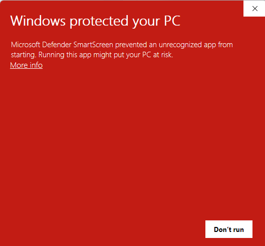
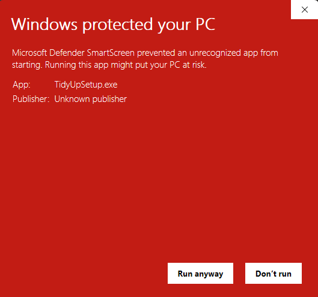

TidyUp PC
ดูแลคอม Windows ติดตั้งลงเครื่องและถอนออกได้จาก Settings > Apps ตอนติดตั้ง Windows จะถามสิทธิ์ผู้ดูแล
ดาวน์โหลด TidyUpSetup.exeตอนเปิดตัวติดตั้งครั้งแรก Windows อาจแสดงหน้าจอสีแดง "Windows protected your PC" ซึ่งเป็นเรื่องปกติของโปรแกรมใหม่จากผู้พัฒนาที่ Microsoft ยังไม่รู้จัก หน้านี้อธิบายว่าเกิดจากอะไร เปิดใช้อย่างไร และตรวจไฟล์ด้วยตัวเองได้อย่างไร
ดูแลคอม Windows ติดตั้งลงเครื่องและถอนออกได้จาก Settings > Apps ตอนติดตั้ง Windows จะถามสิทธิ์ผู้ดูแล
ดาวน์โหลด TidyUpSetup.exeโปรแกรม PDF ติดตั้งให้ผู้ใช้คนปัจจุบันโดยไม่ต้องใช้สิทธิ์ผู้ดูแล และถอนออกได้จาก Settings > Apps
ดาวน์โหลด NanoPDF-Setup.exeSmartScreen เตือนเพราะยังไม่รู้จักไฟล์ ไม่ใช่เพราะพบสิ่งอันตราย
SmartScreen ให้คะแนนไฟล์จากจำนวนคนที่ดาวน์โหลดและเปิดใช้ ไฟล์ใหม่ที่เพิ่งปล่อยจึงถูกเตือนก่อน แม้จะไม่มีอะไรผิดปกติ
ไฟล์ของเราเซ็นด้วยใบรับรองของ NanoHash เอง ซึ่งยังไม่ได้ออกโดยหน่วยงานที่ Windows รู้จัก Windows จึงยังแสดงชื่อผู้พัฒนาไม่ได้
เมื่อ Microsoft Defender พบภัยจริง จะขึ้นว่าพบภัยคุกคาม และลบหรือกักไฟล์ทันที โดยไม่มีปุ่ม Run anyway ให้กด
ทำแค่ครั้งแรกครั้งเดียว ครั้งต่อไปจะเปิดได้ตามปกติ
เมื่อเห็นหน้าจอสีแดง "Windows protected your PC" ให้กดข้อความ More info ใต้ข้อความเตือน อย่าเพิ่งกด Don't run

ตรวจว่าช่อง App เป็น TidyUpSetup.exe หรือ NanoPDF-Setup.exe ตรงกับไฟล์ที่ดาวน์โหลดจากหน้านี้ แล้วกด Run anyway สำหรับ TidyUp PC Windows จะถามสิทธิ์ผู้ดูแลต่อ ให้กด Yes

ไม่ต้องเชื่อคำพูดของเรา ใช้เครื่องมือที่มีอยู่แล้วใน Windows ตรวจได้ก่อนเปิด
คลิกขวาที่ไฟล์ในโฟลเดอร์ Downloads เลือก Scan with Microsoft Defender (บน Windows 11 อยู่ใน Show more options)
เปิด PowerShell แล้วรันคำสั่งนี้ จากนั้นเทียบตัวเลขกับค่า sha256 ของไฟล์เดียวกันในหน้า Releases ถ้าตรงกัน แปลว่าเป็นไฟล์เดียวกับที่เราปล่อย
Get-FileHash "$env:USERPROFILE\Downloads\TidyUpSetup.exe"
อัปโหลดไฟล์ไปตรวจที่ VirusTotal ซึ่งสแกนด้วยโปรแกรมป้องกันไวรัสหลายสิบตัวพร้อมกัน
ไม่แน่ใจตรงไหน ถามเราได้ที่ support@nanohash.biz